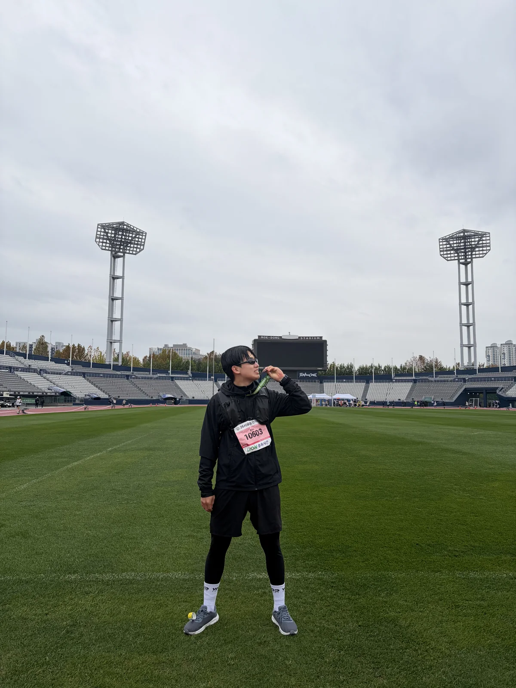
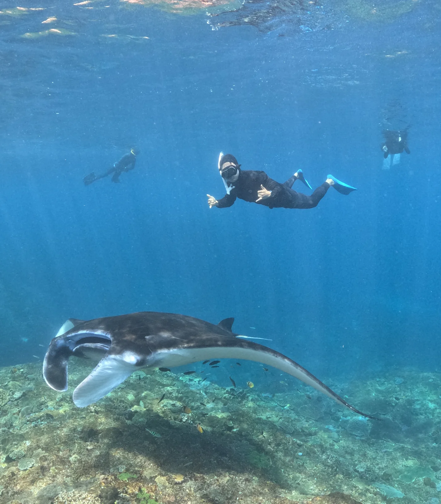

RunningA Rainy 10K at Mokdong StadiumA rain poncho, a finisher’s medal, and a few photos from the Seoul Donghaeng Marathon.November 1, 2026
FreedivingFreediving off Nusa PenidaA manta ray, a sea turtle, and some very cold water off Bali.September 18, 2026